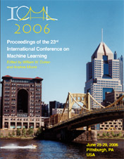
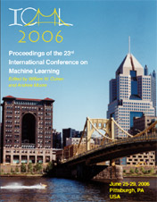

|
William W. Cohen
|
Areas of expertise
I have extensive experience in machine learning and discovery,
information retrieval, information extraction, and data integration.
Biography
William Cohen received his bachelor's degree in Computer Science from
Duke University in 1984, and a PhD
in Computer Science from Rutgers
University in 1990. From 1990 to 2000 Dr. Cohen worked at AT&T Bell Labs and later AT&T Labs-Research, and from
April 2000 to May 2002 Dr. Cohen worked at Whizbang Labs, a company
specializing in extracting information from the web. Dr. Cohen is
member of the board of the International Machine Learning
Society, and has served as an action editor for the Journal of Machine Learning
Research, the journal Machine
Learning and the Journal of
Artificial Intelligence Research. He was Program Co-Chair of the
2006 International Machine Learning Conference
and Co-Chair of the 1994
International Machine Learning Conference, and has served on more than 20
program committees or advisory committees.
Dr. Cohen's research interests include information integration and
machine learning, particularly information extraction, text
categorization and learning from large datasets. He holds seven
patents related to learning, discovery, information retrieval, and
data integration, and is the author of more than 100 publications.
I'm currently involved with:
- SLIF, a system that analyzes the text and images
in online journal articles to find information about the subcellular localization of proteins.
- CALO and RADAR, two large projects focused on
intelligent agents for office automation.
- The Pittsburgh Science of Learning Center,
notably in a project to add learning-by-demonstration to CTAT.
- My latest baby is Minorthird, an
open-source Java package of information extraction and text
classification learning tools.
I am now distributing a standalone tool, built on Minorthird, for
annotating biomedical text. This is particularly aimed at annotating
figure captions but might be useful for other text as well. The jar file for this is rather large
(17M), as it includes a Minorthird jar. There is documentation available for this,
and some sample data.
My student Vitor Carvalho distributes the poetically named Jangada and
Ciranda,
which are also standalone apps built on top of Minorthird, to analyze
email messages.
-
Here's a cool demo of a
Google-Sets-like bootstrapping tool written by my student Richard Wang.
-
SecondString is
another open-source Java package, of approximate string matching
techniques.
- SLIPPER and WHIRL are
now being distributed via Rutgers University. They are free for research
purposes.
- To get a copy of RIPPER, please send mail to my evil twin brother,
wcohen -AT- gmail.com.
As an alternative to that ancient code: I haven't used it myself, but
I've heard good things about
J-RIP, a Ripper clone written for WEKA.
The following datasets are available for anyone to use for research
purposes:
- 617
messages from 20 Newsgroups, annotated for reply bodies and
signatures, prepared by my student Vitor Carvalho
-
Two subsets of the Enron data, annotated with person names,
prepared by my student Einat
Minkov.
- Enron email dataset
(400Mb, once you get there) contains 800,000+ emails from 150 users+
organized into 4700+ folders.
- Some more email data: about two
thousand messages released to the public as part of the ongoing investigation
of US Attorney firings at the Dept of Justice. This is very
strange data---the original email is released as scanned printouts in
PDF (?!), so most of the text is not available. There are links to
copies of the PDF, some manually added annotations, and a (apparently
manually-reconstructed) social network graph. About 1.5Mb (in Excel
format). From Mark
Johnson, and a network of volunteers.
- A collection of various extraction datasets
in Minorthird format (6Mb), including about 1000 Enron emails tagged
for person names and temporal expressions.
- classify.tar.gz (0.4Mb) contains
nine problems in which the goal is to classify short entity names.
This data was used in Joins that Generalize: Text Classification
Using WHIRL (KDD-98).
- ranking.tar.gz (8Mb) contains the
data used for the meta-search experiments in my JAIR paper Learning to Order
Things (with Rob Schapire and Yoram Singer).
- match.tar.gz (0.7Mb) contains a suite of
labeled entity-name matching and clustering problems
(i.e. problems for which the correct matches/clusters are provided),
in a single consistent format. In most cases WHIRL's performance is
given as a benchmark.
These are also distributed in the RIDDLE
Repository. Extraction-oriented versions of some of this data are
available on the RISE
Repository. (I.e., represented as a problem of extracting data from
a website, rather than matching two datasets).
- A Framework for Learning to Query Heterogeneous Data,
invited talk given at IQIS 2006.
- On Beyond Hypertext: Searching in Graphs
Containing Documents, Words, and Actual Data, invited talk given
at DB/IR Day 2006
- A Century Of Progress On Information
Integration: A Mid-Term Report, an overview of information
integration, focusing modestly on my own work, given as invited
talk at WebDB-2005. (Powerpoint; 12Mb!)
- Tutorials:
- Information extraction (PowerPoint;
4.8Mb), aimed at folks somewhat familiar with statistical NLP
methods. And thanks to Thierry Poibeau, there's also a version en francais (did I get that right, Thierry?)
Also, two earlier versions of this are also still around, both
given with Andew McCallum at recent conferences, KDD-2003(PowerPoint; 6.8Mb) and NIPS-2002.
- Text classification
(PowerPoint; 3Mb), given at a CALD Summer Course.
- Collaborative
filtering (PowerPoint; 9.1Mb), given at a DIMACS workshop.
- A mini-course on record linkage and matching:
- Other technical talks:
-
Fall 2008: I'll be teaching Analysis of Social Media, with Natalie
Glance (of Google Pittsburgh) - a brand-new seminar course. Here the
annoucement and a tentative
reading list
-
Spring 2007: Information Extraction, Machine
Learning 10-707 and LTI 11-748 - back by popular demand for the first time since 2004!
-
Fall 2006: Current Topics in Computational Biology (Journal Club), 02-701.
(Announcements)
-
Spring 2006: Read the Web, CALD 10-709.
-
June 21,23,25, 2005: A mini-course on Minorthird. Materials are below.
- Slides, notes, and sample files from first
day's lecture.
- Slides, notes, and sample files from second
day's lecture.
- Powerpoint slides from third
day's lecture.
- Jar file for minorThird, if you
only want to run the code, not compile it or read it.
The installation process here is:
- Install Java 1.4 or higher (actually, JRE is all you need).
- Download the jar for minorThird
and stick it in some directory.
- Optionally, download the sample data
repository and unpack it into the same directory.
- Change to that same directory and
then run Minorthird with the command
java -Xmx500M -jar minorthird.jar
What will pop up will be a small launch pad that can be used to
start any of the UI programs. You can also start a particular
main by specifying minorthird.jar as your classpath, for
instance:
java -Xmx500M -cp minorthird.jar edu.cmu.minorthird.ui.Help
- If you want to do a real install here's the home page on Sourceforge, and
a document on how to do a CVS
install Minorthird.
- Spring 2004: "Learning to Turn Words into Data:
Machine Learning Approaches to Information Extraction and Information Integration", CALD 10-707 and LTI 11-748.
- A Computer Scientist's Guide To Biology is no longer
available from this web page, but is now available from Springer. Here is a the TOC,
introduction, index, and a sample chapter, from a late draft of
the book; and also all the figures
from the book in PowerPoint and all the figures in
PDF. (The figures are a little prettier than the ones in the
final book, which is black and white, not color).
- ICML
2006 Proceedings are available in print, for the true afficianado
of fine learning-related research. It's well worth the money for the
cover art alone (of course, all the papers are also available on-line
for free.)
- Recent and selected publications. These
are some representative publications for which on-line copies can be
distributed.
- All publications. Here is an more-or-less
complete chronological list of my publications. The bibliography
includes pointers to on-line versions when I can provide them, but
unfortunately copyright restrictions don't allow me to make all of my
publications available on-line. Of course, reprints are always
available from me on request.
- Publications by topic:
 

Recent papers I'm keeping in HTML or PDF (which requires Adobe
Acrobat Reader to view). Older papers are mostly in Postscript.
For Windows, I use the GSView reader for
postscript. Most of these papers are viewable in several formats in
ResearchIndex.
William Cohen
Associate Research Professor
Machine Learning Department
Carnegie Mellon University, 5000 Forbes Avenue, Pittsburgh, PA 15213
Wean Hall 5317 / 412-268-7664 (voice) / 412-268-3431 (fax)
Assistant: Sharon Cavlovich, sharonw+@cs.cmu.edu, 412-268-5196
Official CMU Contact Info
My preferred email address is: wcohen AT cs DOT cmu DOT edu
Obscure fact: two of my papers made the Citeseer's list of most-cited machine learning papers.
For those many friends whose research I have built on, be warned.
My full name, "William Weston Cohen", is an anagram of the phrase "I
now cite shallow men". (From Sara Cohen - no
relation! - comes this warning: "Women's rights activists would
probably request you to use the following anagram instead: 'I shall
now cite women'".)
I am often praised for my highly artistic and functional web site
designs. An example is the site for SC Indexing, a professional book
indexer. However, I accept few clients - this one happens to be
my wife.
Through my advisor, Alex Borgida, I can trace my "academic lineage" back to luminaries like
Leibniz and Alfred Whitehead.
Poetry anyone?